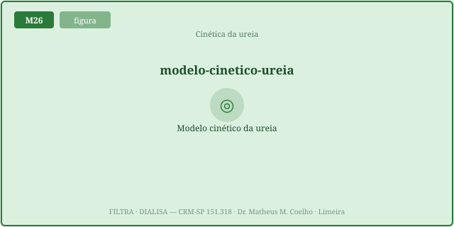
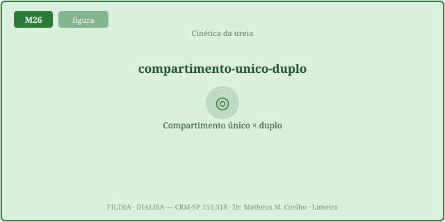
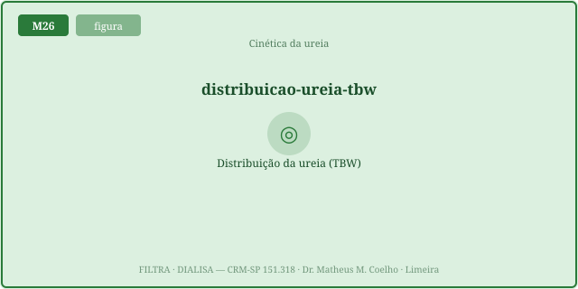
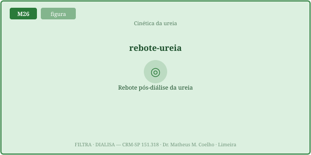
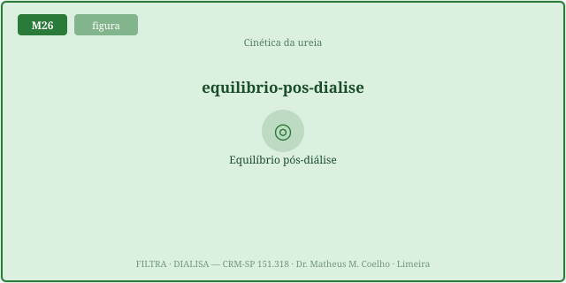
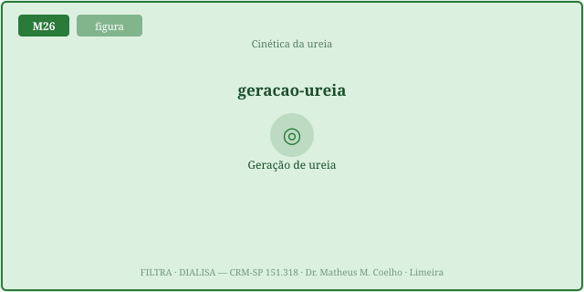
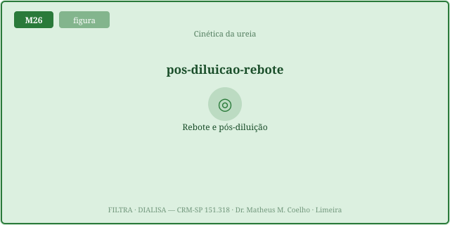

C(t)=C₀·exp(−Kt/V). Mas a
ureia mora em dois compartimentos — o sangue (extracelular, rápido) e os tecidos (intracelular, lento).
A máquina esvazia o sangue mais rápido do que os tecidos repõem; ao fim, o sangue está artificialmente
baixo. Em 30–60 min ele rebota. Logo o eKt/V (pós-rebote) < spKt/V (pool único) — e
quanto mais rápida a sessão, maior a mentira.Dose de diálise é homeostasia restaurada por máquina. Mas medir a
dose é traiçoeiro: a ureia não é um líquido único — é dois. As Fig. 1–8 voltam no Caso, na Trilha e na
Avaliação. Atribuição em CREDITS.md (em curadoria).
Se o corpo fosse um tanque bem-misturado, a ureia cairia em exponencial simples (revisão do M22):
C(t)=C₀·exp(−Kt/V). A "dose" é o Kt/V = clearance × tempo ÷ volume (K em mL/min, t em h,
V em L). A redução é a URR = 1−exp(−Kt/V). É uma boa primeira aproximação — mas mente quando a remoção
é rápida.

C=C₀·e^(−Kt/V).
O sangue é a água do tanque inteiro. Funciona quando a troca tecidual é rápida; subestima o nadir quando
a sessão é curta e eficiente.A ureia se distribui na água corporal total, mas em dois espaços: o extracelular (≈⅓, é o que o sangue mede) e o intracelular (≈⅔, lento). A diálise tira do extracelular; o intracelular repõe pela transferência intercompartimental (Kc, mL/min). Se Kc é finito, o sangue cai mais rápido que o pool real.


Durante a sessão o sangue (extracelular) despenca abaixo do pool verdadeiro. Ao desligar a
máquina, a ureia tecidual reequilibra e o sangue sobe (rebote ~10–20%) até o platô comum
Ceq, em 30–60 min. rebote% = (C_eq − C_fim)/C_fim · 100.


Em vez de esperar a amostra tardia, a equação de taxa de Daugirdas estima o eKt/V
direto: eKt/V = spKt/V − 0,6·(spKt/V / t) + 0,03 (t em horas, acesso venoso). O termo
0,6·(spKt/V/t) é o "imposto do rebote": cresce quando t é pequeno (sessão rápida). Daí
eKt/V ≤ spKt/V sempre.

Duas sessões com o mesmo spKt/V não entregam a mesma dose real. A rápida (K alto, t curto) abre um gradiente intercompartimental grande → rebote maior → eKt/V cai mais. A gentil (K menor, t longo) deixa os tecidos acompanharem → rebote pequeno → eKt/V ≈ spKt/V. O tempo é dose.

Homem de 60 anos, 70 kg, em HDI. O nefrologista quer "encaixar mais um paciente" e encurtar a sessão. O que muda na DOSE real?
Que o corpo é um tanque bem-misturado e a
ureia cai em exponencial: C(t)=C₀·exp(−Kt/V). Simples, mas ignora a estrutura de dois
compartimentos.
A dose adimensional: clearance (K) × tempo (t) ÷ volume de distribuição (V). É quantas "vezes o volume de ureia" o dialisador depurou na sessão.
Na água corporal total: ≈⅓ extracelular (o sangue mede isto) e ≈⅔ intracelular (lento). A máquina só alcança o extracelular diretamente.
Porque a diálise esvazia o extracelular antes do intracelular conseguir repor (transferência Kc finita). O sangue fica "artificialmente baixo" ao fim.
A subida da ureia no sangue 30–60 min após desligar a máquina, quando os tecidos reequilibram. Tipicamente 10–20% acima do nadir do fim.
Porque o rebote sobe a ureia → a redução real é menor que a calculada pelo nadir do fim. A dose efetiva (equilibrada) é sempre ≤ a de pool único.
eKt/V = spKt/V − 0,6·(spKt/V/t) + 0,03
(t em horas). O termo do meio é o imposto do rebote, maior quando t é curto.
Remoção rápida abre um gradiente intercompartimental maior → rebote maior → o eKt/V cai mais abaixo do spKt/V. À mesma dose geométrica, a rápida entrega menos.
O tempo é dose. Para entregar a mesma dose real, prefira sessões mais longas/gentis; e meça o eKt/V (Daugirdas ou amostra pós-rebote), não o número enganoso do fim.
Os controles do Lab alimentam esta curva. Em ciano: o sangue (dois compartimentos) mergulhando durante a sessão. Em cinza tracejado: a leitura pool único (ingênua). No fim (◎ laranja) o sangue está no nadir; depois ele rebota (verde) até o platô de equilíbrio (◎ verde). A distância fim→equilíbrio é a diferença spKt/V × eKt/V.
| Variável | Atual | Comentário |
|---|---|---|
| spKt/V (pool único, do fim) | — | a leitura ingênua |
| eKt/V (Daugirdas, pós-rebote) | — | a dose REAL |
| Ureia ao fim (fração) | — | nadir artificial |
| Ureia no equilíbrio (fração) | — | após o rebote |
| Rebote (%) | — | (C_eq−C_fim)/C_fim |
| URR equilibrada (%) | — | redução real |
| Mentira spKt/V − eKt/V | — | o quanto o fim engana |